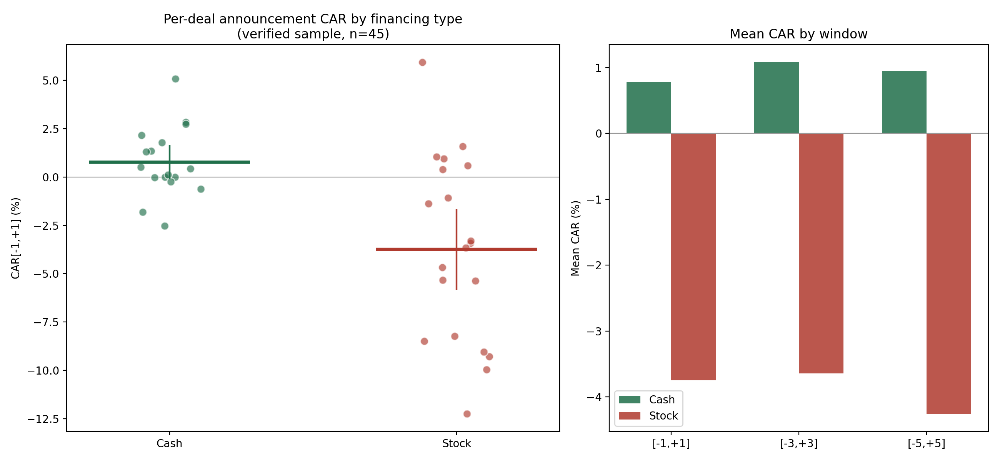

Pfizer Wasn't Special. I Tested 45 Deals to Find Out.
When I ran the Pfizer event study, the pattern was too clean to ignore. Cash deals barely moved the stock. Stock-funded deals got hit hard. Eleven data points is not evidence of anything on its own, it is a hypothesis with a nice chart attached. So I went and built a market-wide sample from scratch to see if the pattern was actually a market-wide effect or just something true about how Pfizer, specifically, does deals.
It held. It got stronger, actually. And the process of building the sample honestly turned up something more interesting than the finance question I started with.
How I built it
I pulled every 8-K on SEC EDGAR since 2016 whose exhibit language matched deal-consideration phrases like "all-cash transaction" or "stock-for-stock," filtered down to acquirers with a market cap of at least ten billion dollars, and ran the same market-model event study I used on Pfizer, cumulative abnormal return against the S&P 500, over three windows around each announcement. Same math, much bigger sample, and this time nothing hand-picked.
What I did not expect
Before I got to any finance question, I had to deal with a data quality problem I did not see coming. Of the large-cap filings my initial search pulled in, 54 percent were not actual deal announcements at all. Most were quarterly earnings releases and deal-completion notices that happened to use the same cash-and-stock language a real announcement would. If I had run the study on that raw sample, over half my "deals" would have been noise, and I would have had no idea.
I built a filter that required real announcement language, agreement to acquire, agreement and plan of merger, and rejected anything that looked like an earnings report or a closing notice instead. Then I screened out deals that landed within a few trading days of an actual earnings release, since that would contaminate the price reaction I was trying to measure. Nobody talks about that 54 percent number when they publish work built this way. I think it might be the more useful finding in this whole project.
What the split said

| Window | Cash CAR | Stock CAR | Gap | Gap p-value |
|---|---|---|---|---|
| [-1, +1] | +0.77% | -3.75% | +4.52pp | 0.0006 |
| [-3, +3] | +1.08% | -3.64% | +4.72pp | 0.016 |
| [-5, +5] | +0.95% | -4.26% | +5.20pp | 0.040 |
Cash-financed acquirers show close to no reaction at all, and it is nowhere near significant on its own. Stock-financed acquirers lose meaningfully, and that loss is significant in every window I tested, tightest and cleanest right around the announcement itself. The gap between the two groups is significant everywhere, not just in the tight window where noise usually hides. Pfizer was not an outlier. It was a small, correct preview of a market-wide pattern.
Why that makes sense
This is the same signaling story from the Pfizer post, just with a bigger sample behind it now. A company that pays in its own stock is telling the market, whether it means to or not, that it thinks its shares are fully priced or better. If management believed the stock was cheap, they would pay cash and keep the upside for existing shareholders. The market reads the signal and marks the stock down before the ink is even dry. Cash deals carry no such confession, and the price reaction shows it.
The honest part
The verification step is the part I actually want to write about, because it is the part that mattered. I hand-checked a stratified twelve-deal subsample against the real SEC filings before I trusted any of this. Ten held up exactly as labeled. One did not. Coeur Mining's acquisition of SilverCrest was sitting in my dataset as a cash deal. The actual filing says "stock-for-stock transaction." I fixed it, and the corrected numbers came out stronger, not weaker, which is not something I engineered, it is just what happened when I checked my own work instead of trusting it.
That is the real limitation here, and I am not going to pretend it away. I hand-checked twelve of forty-five deals. The other thirty-three rely on a classifier that passed the twelve-deal test but was not exhaustively confirmed. Forty-five deals across nine years is not a huge sample either, and I would want to grow it before I lean on this any harder.
What I trust is the direction and the size of the effect, and the fact that it survived someone, me, actually going back and checking it against the primary source instead of taking my own pipeline's word for it. That is the standard I am going to hold every version of this project to going forward, Pfizer included.